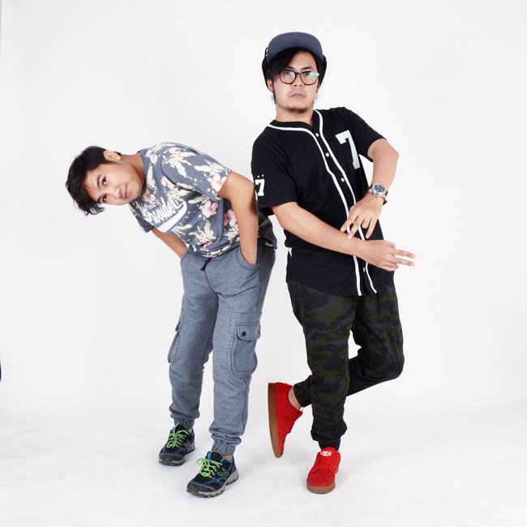
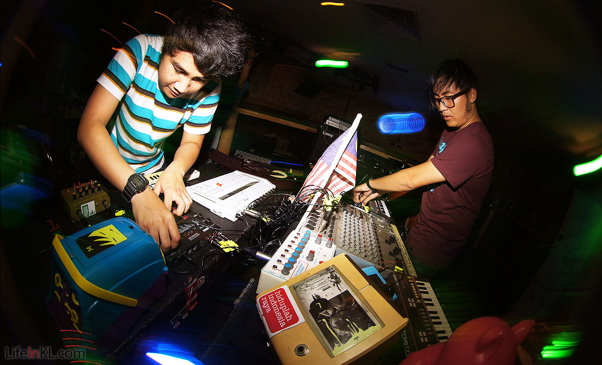
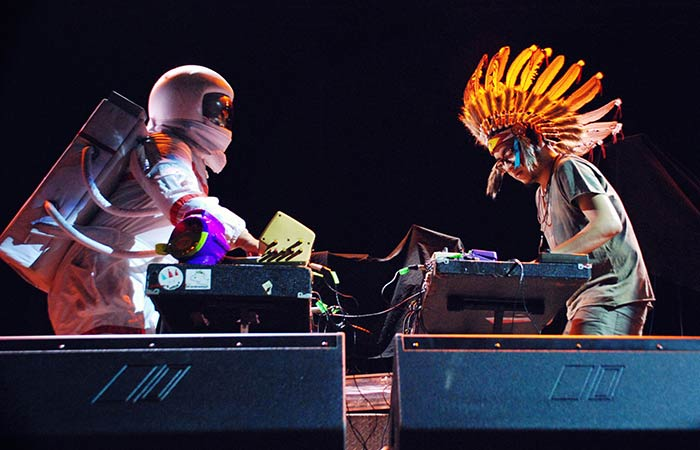

|
Bottlesmoker adalah sebuah proyek musik yang digagas oleh Anggung Kuy Kay (Angkuy) dan Ryan Nobie Adzani di Bandung, tahun 2005 silam.
Dari awal pembentukannya, Duo menghasilkan musik ekperimental terutama di ranah Electronic pop/ Indietronic instrumental yang masih jarang ditemui
di Indonsia circa tahun 2000an. Bottlesmoker bereksperimen dengan alat musik mainan dan perangkat yang telah dikostumasi.
Hasilnya, suara yang diproduksi sangat unik dengan baluran musik pop nan unik sekaligus catchy.
Bottlesmoker memproduksi sendiri perangkat musik yang mereka gunakan melalui proses bending circuit.
Baik Angkuy maupun Nobie sangat menyukai alat musik seperti Glockenspiel, Hand Bell, Melodica atau mainan dalam bentuk apapun yang menghasilkan bunyi layaknya
Toy Phone, Radio dan Nintendo. Keduanya juga sangat cakap dalam menghasilkan dan menyulin suara dari pelbagai alat instrumen menjadi sebuah harmoni.
Selain itu, Bottlesmoker juga menggunakan costumized equipment seperti Noise Box, Theremin atau 8 Step Sequencer.
Penggunaan pelbagai alat serta kemampuan Angkuy dan Nobie dalam merajut suara yang dihasilkan inilah yang membuat Bottlesmoker terdengar lian dari musisi lainnya.

Dalam proses kreatif mereka, Bottlesmoker berhutang inspirasi pada banyak musisi di antaranya Lullatone,
Dan Deacon dan Tiny Kid. Pun, Angkuy dan Nobie banyak dipengaruhi oleh lingkungan di sekitar mereka.
Dengan semua pengaruh ini, musik yang diciptakan oleh Bottlesmoker menjadi sebuah sanctuary musikal nan hangat yang berusaha ditransfer oleh
Angkuy dan Nobie pada audience mereka. Musik mereka ramah seperti ruang hangat yang kau pakai untuk menjalankan lelaku sehari-hari, seperti sebuah rumah,
pengantar tidur dan berkendara, teman membaca hingga pengiring penciptaan sebentuk karya seni dll.
Bottlesmoker terlahir dari sebuah pemberontakan, sebuah pembelotan guna menghancurkan pola normal dan berterima dalam pembuatan sebuah karya musik.
Pada awal tahun 2005, pada saat kedua pemuda ini mulai membuat musik elektronik down tempo, sejatinya karya mereka susah diterima banyak orang.
Nyatanya, Angkuy dan Nobie memang menyuguhkan sebuah konsep yang susah diterima pada masanya.
Sebuah fakta yang kelak ditingkahi dengan keputusan keduanya untuk melakukan semuanya – produksi, distribusi dan promosi – secara mandiri.
Semua lagu bottlesmoker tercipta di kamar Angkuy atau Nobie. Keduanya merekam, melakukan mixing dan mastering lagu mereka dengan menggunakan laptop.
Tak ayal, banyak menyebut Bottlesmoker sebagai testimoni terhadap kesuksesan musisi kamar dan – pada akhirnya – menjadi pemicu kemunculan
banyak musisi kamar dari kenyaman kamar mereka. Angkuy, Nobie dan semua musisi kamar itu memang tak pernah memerlukan studio rekaman.
Mereka toh cuma perlu sebuah kamar untuk berkarya.
Demo yang dibuat Angkuy dan Nobie kerap ditolak oleh label rekaman lokal, yang mungkin tidak memahami genre dan pilihan sound Bottlesmoker.
Musik mereka mungkin bukan mesin penghasil hit atau bahkan bukan musik yang akan laku. Namun, kedua pemuda ini patah arang.
Penolakan ini menjadi pemicu Bottlesmoker menjadi lebih kuat, berdikari dan – akhirnya – memilih hidup di internet.

Penolakan oleh label rekaman lokal membuat Bottlesmoker memilih untuk mewartakan musiknya pada audiens di manca negara.
Prinsipnya, setidaknya menurut Angkuy dan Nobie, “Kalau ada 10 orang benci musik buatanmu, pasti ada 100 atau lebih orang di luar sana yang menyukainya”.
Dan, mereka benar. Ada banyak pecinta musik di luar sana yang mencintai karya Bottlesmoker.
Feedback positif banyak diterima oleh Angkuy dan Nobie. Di tahun 2006, Bottlesmoker merilis album pertama,
Before Circus Over, secara cuma-cuma melalui akun myspace mereka. Album yang sama kemudian dirilis ulang sebuah netlabel dari Spanyol, Neovinyl Records.
Dua tahun kemudian, Bottlesmoker menerima tawaran untuk merilis album kedua mereka, Slow Mo Smile, lewat sebuah label asal Amerika Serikat,
Probablyworse Records. Lagi-lagi, album ini pun dirilis ulang oleh Neovinyl.
Internet adalah sebuah opsi yang sengat menarik hingga Bottlesmoker meneruskan semua aktivitas berkarya mereka di duni daring.
Proses pembelajaran, ekperimentasi, interasksi sosial, produksi dan distribusi dilakukan dengan bantuan internet.
Ketika musik Bottlesmoker tidak mendapat airplay di radio lokal karena murni instrumental, Angkuy dan Nobie kembali memilih
internet dan menstreaming lagu mereka lewat myspace, bandcamp bahkan soundcloud.
Ketika video mereka ditolak oleh TV lokal, Bottlesmoker kembali mengandalkan kanal internet. Kali ini mereka menggunakan Youtube dan Vimeo.
Saat semua musisi berlomba mendapatkan kepercayaan label rekaman, Bottlesmoker membagi lagu mereka secara cuma-cuma lewat netlabel.
Bahkan internet kembali mereka gunakan untuk kepentingan promosi. Dengan memaksimalkan Social Media Network dan bekerja sama dengan webzine,
Bottlesmoker berhasil mewartakan eksistensinya dengan baik. Jelas, internet adalah rumah yang nyaman bagi Bottlesmoker.
Maka, dengan pemanfaatan internet yang maksimal, Bottlesmoker menyebarkan musik mereka secara masif.
Akhirnya, Indonesia membuka matanya atas apa yang telah dilakukan oleh Bottlesmoker.
Sejak tahun 2008, Bottlesmoker kerap dipandang sebagai pelopor musisi berbasis internet, khususnya di Indonesia.
Angkuy dan Nobie memiliki prinsip yang tidak dimiliki oleh musisi Indonesia. Duo ini terbuka atas segala bentuk karya kreatif.
Kedua juga percaya bahwa musik mereka harus bisa diwartakan, dibagikan dan dinikmati tanpa sedikit pun halangan. “kami hanya ingin berbagi.
Kami tidak menulis lagu untuk kemudian dijual. Kami tak pernah berpikir untuk menjual karya kami.
Kami hanya ingin berbagi, berbagai rasa, yang kebetulan berbentuk musik.”

Bottlesmoker telah membagi karya mereka secara cuma-cuma sejak album perdana mereka.
Bahkan ketika internet masih asing di Indonesia, Angkuy dan Nobie secara pribadi memberikan album mereka dalam bentuk
CD-R kepada semua yang datang di konser mereka. Mereka menyedikan sebuah booth kecil saat mereka manggung.
Dalam Booth itu, anda bisa mengkopi karya mereka secara gratis dari sebuah komputer. Bottlesmoker juga menggunakan metode S.A.S.E method (
Send Address Stamped Envelope) untuk menyebarkan karya mereka. Anda hanya perlu mengirim sebuah CD-R mereka.
Duo ini akan membakar musik, video dan foto lantas mengirimkannya pada anda.
Ketika Internet akhirnya menjadi bagian tak terpisahkan dari hidup kita, anda hanya perlu mengunduh album mereka dari link yang mereka sediakan.
Semua dilakukan untuk berbagi dan memberi kesadaran pada audiense bahwa apa yang gratis tak selamanya kacangan.
Banyak karya menawan yang bisa didapatkan dengan cuma-cuma.
Pun tak semua musisi bertabiat money oriented. Angkuy dan Nobie kerap membagi pengetahuan mereka tentang software,
kostumisasi instrument dan circuit bending. Bottlesmoker telah mempelopori pengenalan Free Music Sharing di Indonesia,
yang pada akhirnya membuka jalan bagi banyak musisi lain untuk mempromosikan singlenya secara cuma-cuma.
Sampai saat ini, Bottlesmoker masih bisa dijadikan sebuah contoh “seni yang jujur” atas semua karya mereka yang dibagikan dengan gratis.
“Musik yang dibagikan secara gratis sama seperti free will dan kebebasan bicara [Freedom of Speech], Free music adalah konsep yang sangat indah.
Free music bisa bertransformasi menjadi bentuk seni baru, sumber inspirasi anyar dan motivasi untuk mencipta” Lewat prinsip inilah,
Bottlesmoker telah berhasil memaparkan kita pada sebuah terminologi Creative dan “copy left” Common License,
mengajarkan bagaimana mengunduh karya secara legal, mengenamenunjukkan cara menghormati sebuah karya seni, terutama yang disebarkan lewat internet.
|